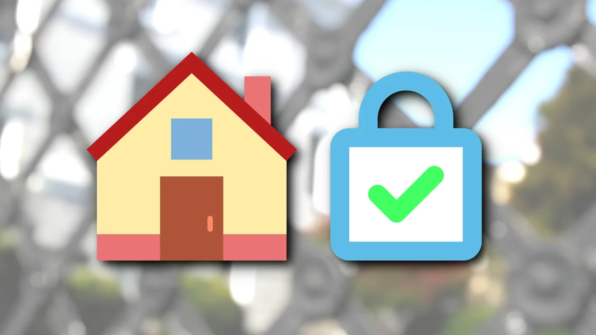
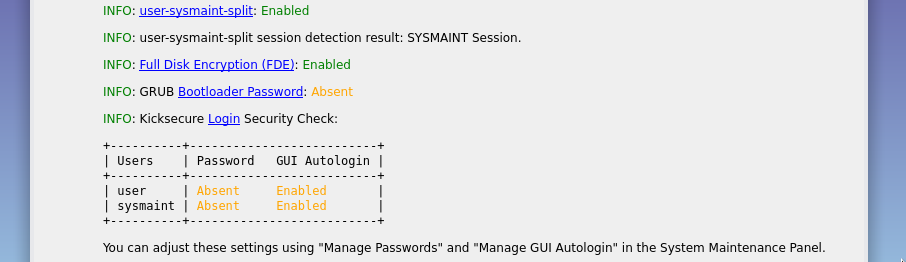

- Default Passwords
- Passwords
- Account Management
- Login
- Login Spoofing
- Safely Use Root Commands
sysmaintAccount- System Maintenance Panel
- Unrestricted Admin Mode
- Protection against Physical Attacks
- User Account Isolation (developers)
user-sysmaint-split (developers)- Polkit (formerly PolicyKit) /
pkexec - privleap /
leaprun
Protect Linux User Accounts against Brute Force Attacks, Administrative ("Root") Account Locking, Console Lockdown, sudo password sniffing, X Windows System / Wayland Password Sniffing, /proc/pid/sched spy on keystrokes, Linux user account cracking, pam_faillock, pam-tally2, pam-cracklib, /etc/securetty
Introduction
We are aiming to provide a comprehensive, rather complete overview. There are many advanced details being discussed in many places on the internet, but explanations of the essential foundations are hard to find. When this topic is usually discussed, there is a large amount of unspoken assumptions and threat models.
Example:
The solution to this is simple: you shouldn't be logging in on the console as root in the first place! (What, are you crazy or something?). Proper Unix hygiene dictates that you should log in as yourself, and su to root as necessary. People who spend their day logged in as root are just begging for disaster.XScreenSaver FAQ, answer to "When I'm logged in as root, XScreenSaver won't lock my screen!"
Sounds quite important, right? Is it? What kind of disaster awaits if being logged in as root? No automatic security disaster. Many applications (such as Kate; Wayland) refuse to run as root. Due to this convention, it is best to go with the flow (what most Linux distributions do) and avoid being logged in as root. As many actions as possible should be done with a non-root user.
To help beginners understand, here are some essential definitions:
rootis the superuser in Linux -- it has unrestricted access to everything on the system, including the ability to modify or delete any file. Think of it like the "admin" account on other operating systems.- A "limited user" or non-root user has only the permissions granted to them. This helps limit the damage if something goes wrong or if malware runs under that account.
sudois a command that temporarily grants root privileges to a regular user, usually after entering a password. This is like saying, "Let me act as an administrator just for this task."- "Threat model" refers to the specific types of attacks you're trying to defend against. For example, a home user might worry about malware from websites, while a server administrator might worry about remote attackers trying to break into the system.
Here are some key concepts:
- Avoiding root compromise: Useful for reasons
explained in chapter Rationale. If malware compromises a regular user,
it can't immediately take over the whole system -- unless that user has
easy access to
sudoor other privilege escalation tools. - Applications under separate user accounts: Many applications nowadays run under different Linux user accounts. For example, the web server and database server very likely run under different Linux user accounts. This separation is similar to assigning different responsibilities to different employees in a company -- so one mistake or compromise doesn't expose everything.
- Context and threat models: Many of the things written about sudo, su, root, and user isolation are correct but were written in a different time and/or with a different threat model in mind.
- Is sudo a security tool? Yes. But what does this
mean?
sudoprovides an audit trail. It keeps a log of all invocations of sudo. Specifically, if there are multiple system administrators, and there is an unexplained issue, they can look at the logs and investigate who performed which action. By default, this only works in non-malicious cases. An attacker with root rights also has the ability to remove evidence of their own actions from logs. Secure, tamper-proof append-only logs is a different security problem to solve. In simpler terms:sudocan help with accountability -- if used correctly -- but it is not foolproof. - Password input security: The sudo project does not guarantee a secure password entry mechanism. Various attack vectors, such as malware, can compromise password security by intercepting or sniffing passwords entered via sudo. This is elaborated in chapter Issues. This means if there's malware on your system, it might be able to "see" what you're typing when you enter your password -- just like a hidden camera watching you type your PIN.
- Password encryption: But how can malware steal the
password? Aren't passwords encrypted? Yes, Linux account passwords are
encrypted in the
/etc/shadowfile. Additionally, non-root users cannot read the/etc/shadowfile thanks to default file permissions. This, however, is of little help against malware. As elaborated in chapter Issues, what malware actually can do to steal the password does not involve attacking the encryption. The encryption of passwords in/etc/shadowis only useful in a different threat model. For example, if an attacker gained access to/etc/shadow(by possibly getting access through full system compromise), then at least the attacker still does not know the user's password. This can be useful in case the user re-used this password elsewhere, for example to log in to their online banking. - Single-user system vs multi-user system: The usefulness of sudo also depends on whether it is a single-user system or a multi-user system. This is elaborated in chapter Information. If only one person uses the computer, the need for sudo may be different compared to a shared computer where multiple users need varying levels of access.
- Local system vs remote server: When using password-based login, the user password matters. However, password-based logins are only safe when logging into a machine locally. Public key authentication is much more secure for remote access. This means: if you're sitting at your computer, typing your password is okay. But if you're logging into your system over the internet, using a password is risky -- it's better to use a cryptographic key instead.
Essentials
In this chapter we would like to introduce the topic of user account isolation more broadly.
History
- Root password sharing issues: Historically, sharing the root password was problematic when one computer was shared by multiple system administrators. If someone changed the root password without properly recording the new password, other administrators could no longer log in.
- Development of sudo: To address this issue, sudo was developed.
- Functionality of sudo: With sudo, individual users
could:
- Log in as root (
sudo su) - Execute individual commands with root rights
(
sudo command).
- Log in as root (
- Insight from sudo's co-author:
I am the co-author of sudo. It was written in the early 80's specifically to address a need to protect the integrity of a shared resource (A VAX-11/750 running BSD UNIX) from its users (the faculty of the CS Department at SUNY/Buffalo). At the time, the only other option was 'su' which required everyone share a single password. Had a calamity occurred it would have been difficult or impossible to sift through the forensics ...Bob Coggeshall, co-author of sudo [1], complete answer here
Isolation Rationale and Benefits
Oftentimes, when we think of a user account, we think of an account on the system that someone is intended to log into. However, most systems have a large number of user accounts, even if they are only intended to be used by a single person. This is because many background processes run on most computers.
- Attack surface and sensitive data: Many of these background processes introduce some form of attack surface or work with sensitive information that other background processes or other people should not be able to access.
- Restricted permissions: To reduce the risk of unauthorized access or severe damage in the event of a compromise, these services are given user accounts with appropriately restricted permissions.
- Compromise containment: If a background process becomes compromised, the attacker will not be able to easily read or write data that the user account restricts them from accessing.
When properly implemented, user account isolation provides three main benefits:
- Protection of system accounts:
- Attack prevention: Hinders system accounts from attacking other system accounts or people's user accounts.
- Risk reduction: Reduces (though does not eliminate) the risk of a compromised service resulting in the entire system being compromised.
- Protection of people's user accounts:
- Account isolation: Hinders people's user accounts from attacking other people's user accounts or system accounts.
- Malicious user prevention: Reduces (though does not eliminate) a malicious user's ability to steal data or compromise accounts they aren't supposed to access.
- Multi-user system relevance: This is particularly useful on systems used by more than one person, such as server machines.
- Root account protection:
- Unauthorized access prevention: Hinders both system accounts and people's user accounts from gaining unauthorized access to the root account.
- Frequent attack target: Since root account access allows one to access any data or compromise any accounts or processes on the system, it is a frequent target for attackers.
Defenses against root user exploits
In this chapter we compare non-hardened vs. Kicksecure-hardened Linux Distributions and discuss various defense strategies implemented by Kicksecure.
Non-Hardened Linux Distributions
- Root compromise risk with sudo accounts:
- Equal to root compromise: By default, a compromised
non-root user account that is a member of the group
sudois almost equivalent to a full root compromise. - Password retrieval risk: There are too many ways for an attacker to retrieve the sudo password.
- Malware risk: See: Malware can sniff the sudo password.
- Equal to root compromise: By default, a compromised
non-root user account that is a member of the group
- Non-sudo account compromise:
- Conditions for root compromise: Compromised
non-root accounts that are not members of the group
sudorequire either:- A) A local privilege escalation exploit, or
- B) Brute-forcing the root password.
- Example scenario: If the web server account
(
www) becomes compromised, it cannot gain root without fulfilling one of these conditions.
- Conditions for root compromise: Compromised
non-root accounts that are not members of the group
- Home folder readability:
- Cross-account data access: By default, the home
folder (
~) of one account (e.g.,/home/user) might be readable by other accounts (e.g.,user2orwww). - Reduced file permission effectiveness: This significantly reduces the usefulness of Linux file permissions.
- Data exfiltration risk: While compromised user accounts might not be able to destroy other user account's data, they can exfiltrate all private user data.
- Cross-account data access: By default, the home
folder (
- Temporary folder attack surface:
- Shared temporary folder: Command
mktempcreates a directory in folder/tmp, which is shared among all Linux user accounts.
- Shared temporary folder: Command
Kicksecure Hardened Linux Distributions

Kicksecure implements various mechanisms to implement strong linux user account isolation:
- Console Lockdown
- Anti Bruteforcing of Linux User Account Passwords (Online Password Cracking Restrictions)
/etc/securetty- Root Login Disabled
- su restrictions
- sudo restrictions
- permission
lockdown: Access rights restrictions such as for example home folder
(
~) of accountuser/home/userbeing readable only by accountuserand not by accountwww. - umask hardening
- libpam-tmpdir:
Provides per-user
/tmpfolder isolation. - Usability: if the advanced advice to Prevent Malware from Sniffing the Root Password is
not followed, then users will only require a single, secure root
password for the account
useraccount. It is no longer necessary to have two secure passwords for the accountuserand root accounts. [2]
Prevention of Malware Sniffing the Root Password is currently only functional for advanced users following the documentation.
Once proposal user-sysmaint-split (Role-Based Boot Modes) has
been implemented there will be a strong guidance for users to better
separate their limited (everyday use) account (user) and
administrative account (sysmaint). This would result in a
robust Prevention of Malware Sniffing the Root
Password.
Console Lockdown

Console lockdown restricts console access to members of the group
console. Everyone else, except members of the group
console-unrestricted, is restricted from using the console.
This includes blocking access via ancient, unpopular login methods such
as /bin/login over networks, which might be exploitable (CVE-2001-0797).
This is implemented using pam_access for the PAM service
login (/etc/pam.d/login), and is part of the
package security-misc.
 Kicksecure/security-misc
Attempts to log in to the console by users who are not members of the
group
Kicksecure/security-misc
Attempts to log in to the console by users who are not members of the
group console result in an error message.
By Kicksecure default:
- Console lockdown is
 Kicksecure/dist-base-files
default in Kicksecure version
Kicksecure/dist-base-files
default in Kicksecure version 15.0.0.8.7and above. - Only the account
useris a member of the groupconsoleby default. - There are no default members of the group
console-unrestricted.
Related files:
- Kicksecure/security-misc
- Kicksecure/security-misc
- Kicksecure/security-misc
- Forum discussion on console lockdown and PAM access configuration
Note: Kicksecure
is an Implementation of the Securing Debian Manual.
Specifically the feature you're reading about here is inspired by this
chapter in the manual: Choose
a BIOS
password
Note: Kicksecure
is an Implementation of the Securing Debian Manual.
Specifically the feature you're reading about here is inspired by this
chapter in the manual: User
access control in
PAM
Note: Kicksecure
is an Implementation of the Securing Debian Manual.
Specifically the feature you're reading about here is inspired by this
chapter in the manual: Disallow
remote administrative
access
Bruteforcing Linux Account Passwords Protection

Bruteforcing into Linux user accounts is severely limited by the package security-misc.
- Account lockout policy: Accounts are locked after
50 failed login attempts using
faillock, requiring the password unlock procedure. - Configuration details:
- Usability enhancement:
Kicksecure/security-misc
by security-misc:
- Login attempts feedback: Displays the number of remaining login attempts after the first authentication failure.
- Unlock procedure guidance: Provides a link to documentation on performing the unlock procedure when required.
Forum discussion: protect Linux accounts against brute force attacks
Issues:
- PAM issue: pam_faillock tally and lockout status is reset by running a command with a NOPASSWD exception using sudo
- sudo issue: NOPASSWD
exceptions in /etc/sudoers(.d) interact poorly with pam_faillock; no
configuration option exists to allow sudo to tell PAM when a NOPASSWD
command is being run
- Solution for these two issues: Dev/user-sysmaint-split
Online Password Cracking Restrictions
A secure password for root/user accounts does not necessarily have to follow the rationale explained on the Passwords page. Offline attacks against the password (parallelization, password cracking attempts limited only by RAM, disk, and CPU) are not possible. Only "online" attacks are feasible, similar to attempts to crack a password of a user account on a website.
These attacks are limited to a specific number of attempts (e.g., 50 failed login attempts) within a defined time period (TODO). After the limit is reached, the account is locked, and additional steps, such as a password unlock procedure, are required.
See also: Bruteforcing Linux User Account Passwords Protection
Relevant discussion: How strong do Linux user account passwords need to be when using full-disk encryption?
/etc/securetty
The package security-misc
removes all non-comment lines from /etc/securetty. As a
result, root login and ancient console-based root login attempts are
effectively disabled.
- Configuration details:
Kicksecure/security-misc
Note: Kicksecure
is an Implementation of the Securing Debian Manual.
Specifically the feature you're reading about here is inspired by this
chapter in the manual: User
access control in
PAM
Root Account Locked
- Root account locked: The
rootaccount has been locked for login by default since Kicksecure15.0.0.3.6. - Definition complexity: The definition and
repercussions of a "locked" Linux user account are complex across all
Linux distributions.
- Technical background: The command
passwd -l,--locksimply prepends an exclamation mark ("!") in the account's password field in the/etc/shadowfile. The interpretation of this locked status depends on the tools processing it. - Privilege escalation tools: A locked
rootaccount still permits the use of privilege escalation tools to "log in" asroot. Commands such assudo suremain functional. - SSH-based logins: User accounts locked using sudo passwd --lock root are not necessarily banned from logging in. Behavior depends on the specific SSH configuration. This is documented in wiki chapter SSH Login Comparison Table.
- See also: Meanings of Special Characters in the Password Field of /etc/shadow File.
- Technical background: The command
- Context: A locked
rootaccount alone provides only a minor security enhancement. Its effectiveness depends on additional configurations documented on this wiki page.
Usability:
- For users that require account password protection, having only two
user accounts with a password (
userandsysmaint) and norootaccount login by default simplifies security. This setup ensures users only need to remember and secure two strong passwords instead of three. rootlogin failures do not count as failed login attempts, thanks to thefaillockimplementation by security-misc.
Implementation:
- This is implemented in package dist-base-files
debian/postinstmaintainer script in functionlock_root_account. The effectively executed command is passwd --lock root . - Kicksecure/security-misc
- Kicksecure/security-misc
Documentation:
su restrictions
By default in Debian, any user account can attempt to use
su to switch to the root user or another user account. This
means any user can attempt to bruteforce switching to another account.
Kicksecure / Whonix (via the package security-misc)
restricts this behavior by requiring group sudo membership
to use su, utilizing pam_wheel.
- Configuration details:
Kicksecure/security-misc
Additionally, SUID Disabling and Permission Hardening by
security-misc removes SUID from su and many other binaries
by default for further hardening.
User documentation:
Related development discussion:
Note: Kicksecure
is an Implementation of the Securing Debian Manual.
Specifically the feature you're reading about here is inspired by this
chapter in the manual: Using
su
su success sample log
Jan 06 05:28:43 work-main su[51364]: pam_exec(su:auth): /usr/libexec/security-misc/pam_only_if_su failed: exit code 1
Jan 06 05:28:43 work-main su[51364]: pam_wheel(su:auth): Ignoring access request 'user2' for 'root'
Jan 06 05:28:43 work-main su[51366]: pam_exec(su:auth): Calling /usr/libexec/security-misc/pam-info ...
Jan 06 05:28:43 work-main su[51364]: pam_exec(su:auth): /usr/libexec/security-misc/pam_faillock_not_if_x failed: exit code 1
Jan 06 05:28:45 work-main su[51364]: pam_exec(su:auth): /usr/libexec/security-misc/pam_faillock_not_if_x failed: exit code 1
Jan 06 05:28:45 work-main su[51380]: pam_exec(su:auth): Calling /usr/libexec/security-misc/pam-abort-on-locked-password ...
Jan 06 05:28:45 work-main su[51364]: (to root) user2 on pts/6
Jan 06 05:28:45 work-main su[51364]: pam_unix(su:session): session opened for user root(uid=0) by user(uid=1001)
Jan 06 05:28:45 work-main su[51364]: pam_succeed_if(su:session): requirement "uid eq 0" was met by user "root"Annotated:
Jan 06 04:50:17 work-main su[37262]: pam_exec(su:auth): /usr/libexec/security-misc/pam_faillock_not_if_x failed: exit code 1Jan 06 04:50:19 work-main su[37262]: pam_exec(su:auth): /usr/libexec/security-misc/pam_only_if_su failed: exit code 1Expected. See file /usr/libexec/security-misc/pam_faillock_not_if_x and /usr/libexec/security-misc/pam_only_if_su for implementation and comments.
Jan 06 04:50:19 work-main su[37262]: pam_wheel(su:auth): Ignoring access request 'user2' for 'root'su access of user2 for root
was permitted because user2 was a member of group
sudo.
unix_chkpwd error
Jan 06 05:25:43 work-main unix_chkpwd[50748]: check pass; user unknownchmod +s /usr/bin/suShould not be required:
chmod +s /usr/sbin/unix_chkpwdsu failure sample log
Jan 06 05:17:22 work-main su[49202]: pam_exec(su:auth): /usr/libexec/security-misc/pam_only_if_su failed: exit code 1
Jan 06 05:17:22 work-main su[49202]: pam_wheel(su:auth): Access denied to 'user3' for 'root'
Jan 06 05:17:22 work-main su[49202]: FAILED SU (to root) user3 on pts/9Annotated:
Jan 06 05:17:22 work-main su[49202]: pam_exec(su:auth): /usr/libexec/security-misc/pam_only_if_su failed: exit code 1Expected. See file /usr/libexec/security-misc/pam_faillock_not_if_x and /usr/libexec/security-misc/pam_only_if_su for implementation and comments.
Jan 06 05:17:22 work-main su[49202]: pam_wheel(su:auth): Access denied to 'user3' for 'root'su access of user3 for root
failed because user3 was a member of group
sudo.
Console Login Attacks
Blocking access to su would be ineffective if a
compromised user account could log into another user account by
switching to a virtual terminal and bruteforcing the password. However,
this is not possible due to access controls enforced by the Linux
kernel. This section explains how this works.
The Linux kernel provides various virtual console devices to
userspace, typically through the /dev/tty* devices. To
switch between virtual console devices, the user must have write access
to at least one of these devices. By default:
- These devices are owned by root.
- They can only be read and written by the owning user.
This ensures that non-root processes cannot access virtual consoles without root privileges.
One or more login processes are automatically started on
some of these virtual terminals by the init program. These
processes run as root and provide a login prompt to the user. They
cannot be accessed without the ability to read from and write to the
virtual console each process runs on.
Due to the permission restrictions mentioned above, no user process
can log into the system as another user through the console without
already having root privileges. When a user logs in using a virtual
console, the login process controlling that console changes
the permissions on it so that the user who just logged in can read and
write data on that console. This allows the user to interact with any
program executed on the console (typically a shell such as
bash).
Once the user logs out, the console device's permissions revert, preventing processes running as the user from exploiting the console login system to log in as another user.
This is about where the process is started and what has connected as controlling terminal. It isn't anything Qubes specific. A non-privileged process cannot inject characters into a separate session (let's forget about X11 breaking all this assumptions, as we are talking about non-X11 session), especially if it's of a different user, similarly as it cannot write to files it doesn't have write permission. to. You can think of it as a write access to
/dev/tty(or/dev/hvc0in this case). When you login on/dev/hvc0, login process (running as root) will setup permission to/dev/hvc0and also pass an open FD to it to your shell. Then, you (user, and that shell) will be able to interact with/dev/hvc0and specifically run commands connected to it. If you don't login there, login process will not set the permissions, so you won't have access. This does assume kernel enforced permissions are effective, but as we are talking here about in-VM account isolation only, it's a reasonable assumption.Comment by Marek Marczykowski-Górecki, Qubes lead developer
This raises the question of how it is possible to switch between
virtual consoles using a keypress such as Ctrl+Alt+Fn, or by using a
command such as chvt. Virtual console switching is done by
one of two things - the kernel virtual console code itself, or a program
that can control any one of the virtual console devices.
If you are logged in at a TTY, and press a Ctrl+Alt+Fn key combo, the kernel's virtual console code will detect the keypress and switch to the desired virtual terminal.
If you use the chvt command while logged into a virtual
terminal, it will be able to switch to another virtual terminal because
the virtual terminal the user logged in at is now readable and writable
by the logged-in user. It can thus access it and tell the kernel virtual
terminal code to switch to a different virtual terminal.
When you have a running graphical session, things are slightly more
complicated. The display server will take control of one of the virtual
consoles, and when one presses Ctrl+Alt+Fn, that keypress
will go to the display server, not the kernel virtual console code. In
this instance, the display server will interpret the keypress and
instruct the kernel's virtual terminal code to switch to the user's
desired virtual console. (X11, Sway, and labwc, and likely most other
Wayland compositors that render to a physical display, work in a similar
or identical fashion here.)
With the above rules in place, the only way to gain read/write access to a virtual terminal is to:
- Have physical access to the computer, thus giving one the ability to communicate directly with the kernel virtual terminal code.
- Or, be running under a user account that has logged in at a virtual
terminal already.
- In this latter instance, software running as the logged-in user could switch to a different virtual terminal, but it would not be able to attempt to login at that terminal. That would require read/write access to the virtual terminal that was switched to. Virtual terminals that have a login prompt are only able to be read from and written to by root or a person with physical access to the machine.
It is also possible to communicate with an application that is controlling a virtual terminal. The most common example of this is a display server. In this instance, it is possible to perform some limited console-level actions (namely switching to a different virtual terminal) even without direct read/write access to any virtual terminal device (for instance, by using an emulated input protocol in the Wayland compositor to emulate a Ctrl+Alt+Fn keypress).
Even in this scenario, however, a malicious process that did this would not be able to login at the virtual terminal that was switched to, because it would not have read/write access to the virtual terminal that it switched to.
Wayland compositors generally run as a non-root user and can only be accessed by the user they run as (or by the root account). File permissions are used to protect the socket the compositor uses for communicating with graphical applications. The base Wayland protocol also does not make it particularly easy to inject keystrokes into the server the way X11 does, although there are additional input method protocols that allow Wayland clients to act as input devices. Therefore, one should not assume it is impossible for a program to inject input into Wayland if it can connect to the Wayland server.
The chvt command is a simple user-space tool that changes virtual terminals by accessing TTY devices directly, but users without sufficient privilege will fail to switch virtual terminals regardless of the presence of the command.
sudo restrictions
By Debian default, users who are not members of the group
sudo cannot use sudo. Therefore limited user
accounts (for example user sdwdate) cannot use
sudo to attempt to crack other user account passwords to
run under these users.
Permission Lockdown

Strong Linux User Account Separation. Access rights restrictions.For example, user1 using home folder
/home/user1 cannot read user2's files in the
/home/user2 home folder.
Removes read, write, and execute access for others for all users who
have home folders under the folder /home by running, for
example, chmod o-rwx /home/user during package
installation, upgrade, or PAM mkhomedir. This will be done
only once per folder in the /home directory, so users who
wish to relax file permissions are free to do so. This protects
previously created files in user home folders that were created with lax
file permissions prior to the installation of the security-misc
package.
debian/security-misc.postinst/usr/libexec/security-misc/permission-lockdown/usr/share/pam-configs/mkhomedir-security-misc
Note: Kicksecure
is an Implementation of the Securing Debian Manual.
Specifically the feature you're reading about here is inspired by this
chapter in the manual: Limiting
access to other user's
information
umask hardening
Complements Permission Hardening for folders outside of
/home.
The umask (user file-creation mode mask) determines the
default file permissions for newly created files and directories. By
default, many systems set the umask to 022, allowing read
access to group and other users, and only write access to the owner. For
enhanced security, especially in multi-user environments, it's advisable
to set a more restrictive umask, such as 027,
which restricts new files and directories to be accessible only by their
owner.
The default umask for files created by non-root users,
such as the user account, is set to 027.
This behavior is achieved through the PAM module configuration:
pam_mkhomedir.so umask=027.
By setting this value, files created by non-root users are protected
from being read by other non-root users by default. Although the
/home folder is already secured by Permission Lockdown,
this configuration provides additional safeguards for directories like
/tmp.
group read permissions are retained, which is safe due
to Debian's implementation of User Private Groups (UPGs). For further
details, refer to: User Private
Groups.
The root umask remains unchanged because system
configuration files in /etc require "others" read access to
avoid breaking applications. Examples of such files include
/etc/firefox-esr and /etc/thunderbird. To
address this, the umask for root is configured to
022 via sudoers, ensuring files created by
root remain world-readable. This includes actions like
sudo vi /etc/file or
sudo -i; touch /etc/file.
User documentation: umask
Discussions:
- https://forums.whonix.org/t/change-default-umask/7416
- Kicksecure/security-misc
- Kicksecure/security-misc
- Kicksecure/security-misc
Note: Kicksecure
is an Implementation of the Securing Debian Manual.
Specifically the feature you're reading about here is inspired by this
chapter in the manual: Setting
users
umasks
libpam-tmpdir
Temporary files based attacks:
- https://unix.stackexchange.com/questions/235985/how-can-i-safely-create-and-access-temp-files-from-shell-scripts
- https://security.stackexchange.com/questions/11606/what-are-the-dangers-of-storing-webserver-temp-files-in-the-tmp-folder
Defense:
- libpam-tmpdir
Many programs use $TMPDIR for storing temporary files. Not all of them are good at securing the permissions of those files. libpam-tmpdir sets $TMPDIR and $TMP for PAM sessions and sets the permissions quite tight. This helps system security by having an extra layer of security, making such symlink attacks and other /tmp based attacks harder or impossibleDebian package libpam-tmpdir - automatic per-user temporary directories
Discussion:
user-sysmaint-split

Thanks to Dev/user-sysmaint-split / sysmaint attack surface from privilege escalation
tools such as sudo should be completely mitigated.
- Locked administrative account in user boot mode: There's no
administrative ("
root" or "sudo") password the user could enter. - Password sniffing protection: Therefore, there is no password for malware to sniff
- SUID attack surface mitigation: There's no privilege
escalation tool accessible SUID. For example,
sudolacks "world" (others (o) or anyone) executable (x) permission. For example, "user" cannot executesudo. (No Access to Privilege Escalation Tools for Limited Accounts)
Technically equivalent to chmod o-x /usr/bin/sudo.
Example sudo command.
sudo nanoExample error message.
zsh: permission denied: sudo
zsh: exit 126 sudo nanoPolkit
Polkit (formally PolicyKit).
pkexec:
- Thanks to user-sysmaint-split there is No Access to Privilege Escalation Tools for Limited Accounts.
simplified:
systemd(root) -> askspolkitd->systemdelevates actionpkexec(SUID) -> askspolkitd->pkexecelevates action
hardening:
- user-sysmaint split can and does disable
pkexec, remove SUID: yes, using SUID Disabler and Permission Hardener configuration drop-in snippet - but we cannot disable
systemd-run/run0so it avoids askingpolkitd
polkitd and policykit libraries:
user documentation:
run0
- Overview:
run0is a utility included with systemd that is similar tosudoand aims to avoid some ofsudo's security pitfalls while still allowing authorized users to run arbitrary commands.- Authorization model: While
sudouses its own configuration files to specify who may run which commands and how,run0uses Polkit for a roughly equivalent purpose. - SUID difference:
sudois also a SUID-root application, whilerun0runs as an unprivileged user and uses systemd to run commands as a different user. - General limitations: Although
run0is likely more secure thansudoin some ways,run0has a number of limitations that are not immediately obvious and may make it unsuitable for use in some situations. [3][4]- No command subset restriction:
sudoallows users to be permitted to run a limited subset of commands, rather than allowing them to run all commands.run0appears to lack this feature, making the decision of whether to grant a user privileges an "all or nothing" choice. [5] - No per-command passwordless mode:
sudoallows one to configure specific commands to be runnable as root without a password.run0does not appear to have any equivalent functionality; the only way to allow a user to run anything without a password is to allow them to run everything without a password. - No environment variable filtering:
sudoallows restricting which environment variables may be passed to a command.run0lacks this feature as well, which means that even if one could restrict which commands a user could run, the behavior of those commands could be modified in dangerous ways by malicious environment variables. - Attack surface size: The size of
run0's attack surface is unclear. systemd and Polkit do most of the work of authenticating the user and running the desired application. As of 2026-03-26, the latest upstream Git versions of systemd and Polkit together made up about 961,000 lines of code, more than seven times as much assudoat about 129,000 lines. While most of this code is probably not executed when usingrun0, all of it could theoretically have an effect onrun0's attack surface, and it is hard for anyone without a deep understanding of systemd's internals to know which parts are a potential risk and which parts are not. - Polkit helper SUID binary: Because
run0uses Polkit for authorization, a SUID binary (/usr/lib/polkit-1/polkit-agent-helper-1) is used as part of the application launch process. This does not directly undo the benefits ofrun0itself not being SUID, as the SUID code is likely processing much less untrusted data, but many of the issues of SUID binaries in general still apply.
- No command subset restriction:
- Authorization model: While
Ideally, there should be no SUID binaries reachable from the user account, as otherwise significant extra attack surface inside the VM is exposed (dynamic linker, libc startup, portions of Linux kernel including ELF loader, etc.)comment on Qubes ticket Automate vm sudo authorization setup by security researcher Solar Designer
- Kicksecure default behavior: In Kicksecure,
run0is not usable in user sessions by default, because/usr/lib/polkit-1/polkit-agent-helper-1is inaccessible to accounts other thansysmaintwhenuser-sysmaint-splitis installed.- When usable:
run0is usable when booted into sysmaint session.
- When usable:
Discussions and tickets:
- Kicksecure development discussion: replace
sudowithdoas,run0and/orprivleap - Qubes development ticket: Consider deprecating sudo in favor of run0 #10780
- run0: run0: improve polkit integration to replace sudo #39676
SSH
- todo: document
- SSH
- SSH Login Comparison Table
- https://github.com/Kicksecure/security-misc/blob/master/etc/ssh/sshd_config.d/30_security-misc.conf%23security-misc-shared
- https://github.com/Kicksecure/security-misc/blob/master/etc/ssh/ssh_config.d/30_security-misc.conf%23security-misc-shared
Block Unsafe Logins
Threat model: If a legitimate privilege escalation
executable exists on the system that uses PAM, and we have
not yet restricted its access using SUID
Disabler and Permission Hardener, then the application could be used
to escalate privileges to any passwordless account that is a member of a
group classified as "sensitive" during a user session.
For example, if a su-like executable (su-ng
/ su-nextgen) exited that account nginx can
execute, then nginx should not be able to escalate
privileges, log into to the user account.
Note: Meanings of Special Characters in the Password Field of
/etc/shadow File (or /etc/passwd file)
such as for example ! meaning
"locked password" are conventions honored by tools such as
sudo, su, pkexec which are using
PAM. It's module pam_unix parses passwd and
shadow file.
Out of scope:
- Malicious privilege escalation tools. These would require root
privileges or
SUID, and such tools would likely grant root access without authentication or by authenticating the attacker directly rather than a legitimate user. Malware would very most likely disregard conventions such as calling PAM, parsing/etc/passwdfile, etc. - Legitimate privilege escalation tools that do not use
PAMbut instead parse/etc/passwd//etc/shadowfile directly. Mitigating these would require altering password locks in/etc/passwdat boot, which is unsafe and likely not feasible to implement reliably. See also SSH. - Legitimate login tools that use
PAM(e.g.login,greetd,sshd). These tools do not allow one user to escalate to another, and passwordless login is intended to function as expected, even for sensitive accounts.
Source code:
/usr/share/pam-configs/block-unsafe-logins-security-misc/usr/libexec/security-misc/block-unsafe-logins- Related: Default Empty Password Security Impact
Physical Security Check
Figure: systemcheck - Physical Security Check

See systemcheck chapter Physical Security Check.
General Issues
In this chapter general Linux-specific issues are discussed. These issues are unspecific to Kicksecure. Most if not all Freedom Software Linux desktop distributions are affected by one or multiple of these issues.
sudo password sniffing
On Linux distributions other than those based on Kicksecure with user-sysmaint-split, a compromised
account user could be infected with a keylogger (which
unfortunately does not even require root access) that could
trivially read the sudo password and thereby acquire
root access.
user-sysmaint-split (Role-Based Boot Modes) solves this issue.
Reasons:
- Guidance for account separation: Users receive
strong guidance to separate the use of the limited account
userthrough different boot modes. - Group membership: user group sudo membership
- Exclusive sudo access: Only account
sysmainthas the ability to use privilege escalation tools such assudo,pkexec. (No Access to Privilege Escalation Tools for Limited Accounts) - Group membership: Linux user group
sudomembership - Separation of risky activities: Everyday activities
considered higher risk, such as browsing the internet, are clearly
separated under account
user, while activities such as package installation and system upgrades are performed using the separate accountsysmaint. - Reduced risk of
sudopassword sniffing: The account more likely to get compromised due to a higher attack surface, primarily the limited accountuserdoes not have a chance to sniff thesudopassword. This is because limited user accounts lack privilege escalation, and therefore have no privilege escalation (sudo) password prompt, hindering malware from privilege escalation tool password sniffing and privilege escalation. - Local privilege escalation vulnerabilities: Malware requires a local privilege escalation (LPE) exploit to gain root.
X Windows System

- No longer applicable: Kicksecure 18 (and higher) use Wayland
(specifically the
labwcdisplay server) by default.
- Upstream status: X Windows System (X11) is deprecated upstream by its original developers.
- Keystroke interception: Any graphical application running under X11 can see what any account is typing in any other application.
- Example: For example, if account
userrunning X11 would runlxsudo -u limited-account some-application, a compromised graphical application could sniff anything that accountuseris writing. - Password prompts: This includes, but is not limited to, any
sudopassword prompts. This is also the case for applications running under mandatory access control framework AppArmor. - References: See the following footnotes for references about security issues with GUI isolation related to X Windows System (X11). [6] [7]
- Mitigation in Kicksecure: Sudo password sniffing was fixed by sysmaint - System Maintenance User / user-sysmaint-split during the version 17 development cycle.
- Further reading: https://forums.whonix.org/t/what-makes-wayland-more-secure/22672
Wayland application isolation
Wayland is designed to provide good isolation between simultaneously running graphical applications, while still allowing those applications to communicate with each other in controlled ways. In the base Wayland protocol, each window only knows about its own content, and events that are specifically passed to it by the compositor. It does not have any access to the contents, events, or even positions of other windows. This is intended to prevent things such as logging other applications' keystrokes, reading other applications' screen information, etc. This is mostly documented in the Wayland Documentation.
While the base protocol places severe restrictions on what windows know, Wayland compositors in general will allow some additional info to be shared with windows, depending on the particular compositor. For instance, compositors that implement the wlr-layer-shell protocol will allow surfaces to be created that have some knowledge about their position on the screen, while compositors that implement certain image capture protocols will allow applications to access the graphical contents of other windows. Compositors may also allow access to the screen contents or contents of individual windows through PipeWire and the system's xdg-desktop-portal implementation. In general, applications should not assume that other applications will not be able to snoop on their screen contents, even under Wayland.
Keylogging is still a concern with many Wayland compositors, specifically those based upon wlroots such as labwc. See "Allow restricting layer-shell and emulated input protocol access to whitelisted applications". These compositors provide emulated input functionality that can be used to forward keystrokes sent to the wrong window, to the window they were originally intended for. If combined with a full-screen transparent window (or a layer-shell surface), this can likely be used to implement a rootless keylogger for Wayland. labwc has some features in place that will eventually allow preventing sandboxed apps (such as Flatpaks) from being able to do this, but these features are not fully developed yet. See "Block privileged protocols for sandboxed clients". Similar techniques may be usable for implementing a rootless mouse tracker as well. In general, applications should not assume that other applications will not be able to snoop on keystrokes and mouse events sent to them.
TODO:
- https://github.com/labwc/labwc/discussions/2392
- https://github.com/labwc/labwc/issues/1897
- https://github.com/labwc/labwc/pull/1817
- https://github.com/labwc/labwc/discussions/1002
- https://github.com/labwc/labwc/pull/1004
- https://github.com/labwc/labwc/pull/3089
Forum discuss: https://forums.whonix.org/t/what-makes-wayland-more-secure/22672
/proc/pid/sched spy on keystrokes
The /proc filesystem leaks a significant amount of
information about other processes, allowing attackers to spy on certain
processes extensively. One example is /proc/pid/sched,
which enables attackers to spy on keystrokes. However, the information
leakage extends far beyond just that.
- Whonix Forums: Proof of Concept - Spy on Keystrokes
- Openwall Security Discussion
- Whonix Forums: Full-System MAC Policy Discussion
Potential solutions:
hidepid=2mount option: This hides processes from other accounts, preventing spying on processes of other accounts. However, the benefits are limited unless multiple accounts are used, as most users run most applications under the same account.- PID namespaces: These hide processes from outside the namespace and can be used for sandboxing apps, effectively preventing spying on processes outside of the sandbox.
- apparmor.d
profiles: This provides fine-grained restrictions over
/proc, offering a more targeted approach to mitigating information leakage.
LD_PRELOAD
LD_PRELOAD is an environment variable that specifies
certain libraries to preload for an application. An attacker can exploit
this by preloading their malicious library globally to log keystrokes
or, even worse, hijack the program.
There are numerous examples of LD_PRELOAD rootkits in
Linux. One example is:
Potential solutions:
- Use environment scrubbing for everything in
apparmor.d.
Setting up a fake sudo
An attacker can set up a fake sudo binary to trick the
user into providing their password. Below is a simple example attack
implementation demonstrating how this could be accomplished:
cat <<\EOF > /tmp/sudo
- !/bin/bash
if "${@}" = ""; then
/usr/bin/sudo
else
read -r -p "[sudo] password for user: " password
echo "${password}" > /tmp/password
echo "Sorry, try again."
/usr/bin/sudo ${@}
fi EOF chmod +x /tmp/sudo export PATH="/tmp:${PATH}"
This example attack implementation could theoretically be improved further, but that is beside the point being made here.
Even specifying the file path of the real sudo binary
would not work:
function /usr/bin/sudo { echo "Doesn't work"; } function /bin/sudo { echo "Doesn't work"; }
Non-Solutions:
- noexec:
Mounting all user-writeable places such as
/homeand/tmpas non-executable is not a viable solution because an attacker can bypass these restrictions by using the bash interpreter, for example:bash /path/to/script. Would interpreter lock help?
Potential solutions:
- None, except getting rid of
sudoaccess, which is planned sysmaint - System Maintenance User / user-sysmaint-split.
Device timing sidechannels
Device timing sidechannels may allow keylogging but more research needs to be done on this.
If you say Y here, timing analyses on block or character devices like /dev/ptmx using stat or inotify/dnotify/fanotify will be thwarted for unprivileged users. If a process without CAP_MKNOD stats such a device, the last access and last modify times will match the device's create time. No access or modify events will be triggered through inotify/dnotify/fanotify for such devices. This feature will prevent attacks that may at a minimum allow an attacker to determine the administrator's password length.
Potential solutions:
- linux-hardened fixes this by restricting it to CAP_MKNOD [8]
SUID SGID
https://en.wikipedia.org/wiki/Setuid
Ideally, there should be no SUID binaries reachable from the user account, as otherwise significant extra attack surface inside the VM is exposed (dynamic linker, libc startup, portions of Linux kernel including ELF loader, etc.)comment on Qubes ticket Automate vm sudo authorization setup by security researcher Solar Designer
To address this issue, SUID Disabler and Permission Hardener has been created.
Login Spoofing
See login spoofing.
Kernel
The Linux kernel can have security issues. A kernel exploit that can be run from user space and does not require root can be used for LPE (local privilege escalation).
TODO: elaborate
libvirt/KVM
Many people who use KVM to run virtual machines do so via libvirt. libvirt is an abstraction layer that allows users to create, destroy, and manage virtual machines without having to worry as much about the underlying virtualization technology (KVM, QEMU, etc). The popular virt-manager application is a libvirt frontend.
If a user account is added to the libvirt group, it may
be possible to escalate to root without a password (currently this is
known to be possible if the host has virtiofsd or
libvirt-daemon-driver-lxc installed).
virtiofsd allows shared folders with a virtual machine while
preserving any permission changes the guest makes to the shared folder.
libvirt-daemon-driver-lxc allows the creation of
privileged, run-as-root Linux containers. Users who are members of the
libvirt group can access these features without
authentication, and both of these features can be abused to create
arbitrary SUID-root executables on the host. These can then be executed
on the host to escalate privileges to root.
User documentation: [Broken-ExtLink--no-url-was-provided]
Qubes Specific Issues
Qubes - /dev/xen libxenvchan issue
/dev/xen folder permissions are an issue inside Qubes.
See Qubes bug report: harden
insecure permissions inside /dev/xen folder / research
security impact of the Qubes /dev/xen folder
permissions and Root Privilege Isolation and libxenvchan.
Qubes - Automate vm sudo authorization setup versus SUID issue
Would Qubes feature request Automate vm
sudo authorization setup #2695 if implemented require
sudo to retain the SUID bit (security-risk) by default and
be world executable?
An implementation where sudo and other privilege
escalation tools are not executable by default by "others" ("world"),
primarily limited to user account "sysmaint", such as how
Dev/user-sysmaint-split implements this, would be
more secure.
Qubes - Strong Linux User Account Isolation - Motivation
Motivation of user/root isolation in Qubes? In the past, there have been Xen vulnerabilities that required root access. (Actually a kernel module, but root has the permission to load kernel modules.)
All three vulnerabilities have the potential to enable a guest virtual machine to break out of the hypervisor isolation. However, in order to exploit this vulnerability, an attacker would need to be running code in kernel mode of one or more VMs on the system. Any system that allows untrusted users to run arbitrary kernels will be particularly vulnerable.Xen Project: Updates on XSA-213, XSA-214 and XSA-215
At that time, the inability to escalate to administrative ("root") rights, thereby preventing the loading of a malicious kernel modules would have mitigated these vulnerabilities.
Passwords
Default Empty Password Security Impact
Does a default password such as changeme provide better
security than an empty by default password? No, because malware could
easily use dsudo
(or similarly trivial tools) to enter changeme into the
sudo prompt.
Rationale for Change from Default Password changeme to Empty Default Password
- Usability: Better usability.
- No impact on security: See Default Empty Password Security Impact.
- Security theater: A default public known account
password for account
useris security theater. Due to many issues, having a user password to password protect runningsudofrom the user account is also security theater in many contexts. When a user password makes sense is documented in the user documentation. - User documentation: See Default Passwords.
- Real security: Use #user-sysmaint-split. See also Safely Use Root Commands, especially Prevent Malware from Sniffing the Root Password.
- Root login: Root Login Disabled remains unchanged.
- No user freedom restriction: The users ability to
configure a user account password remains unchanged. It is still
possible to set a password. The
pwchangeutility is being provided to simplify the process of configuring account passwords. It is accessible though System Maintenance Panel. See Configuring Passwords. - Accidental copy/paste of sudo command not a
concern: A terminal window is very powerful, dangerous in any
case. One needs to know what one is doing. A destructive command such as
rm -rf ~/file-name *where the user actually meant to writerm -rf ~/file-name*can delete all user data. Only preventingsudodoes not make a sufficient difference. - Secure Administrative Rights Prompt Infeasibility: There are too many issues which prevent the creation of a secure root prompt that cannot be trivially broken by malware. It is technically challenging to fix all of them. These are generic issues applicable to most if not all Freedom Software desktop Linux distributions. In other words, these issues are unspecific to Kicksecure.
- user-sysmaint-split: In user session, sudo password sniffing is being prevented by user-sysmaint-split, because no sudo prompt is available in user session when user-sysmaint-split is installed.
- Comparison: How did Google Android and Apple iOS solve this issue? By having developed different graphical interfaces and user freedom restrictions where the user is being refused administrative rights.
- Forum discussion: default password (changeme) impact
Default Password Implementation Level
What technically changed.
Instead of running
printf '%s\n' "${user_to_be_created}:${password}" | chpasswd --encrypted,
now passwd --delete user is run during the build process in
dist-base-files debian/dist-base-files.postinst.
Related /etc/shadow entry, before 17.2.0.1
and earlier:
user:aTayYxVyw5kDo:19935:0:99999:7:::After, build version 17.2.0.7 and above:
user::19932:0:99999:7:::Related: Meanings of Special Characters in the Password Field of /etc/shadow File
Conclusions
- In Kicksecure based Linux distributions:
- On single-user systems (with a single human used account
only):
- Assessment: There should be no way for potentially
compromised applications running under limited Linux accounts (such as
for example account
sdwdate) - if compromised by malware - to login to other accounts such asrootor accountuser. This is thanks to the following security features: - Malware Compromise Considerations: Strong Linux account passwords should be unnecessary for protection from locally running malware unless above security features can be circumvented.
- Assessment: There should be no way for potentially
compromised applications running under limited Linux accounts (such as
for example account
- On multi-user systems:
- Definition: A multi-user system is defined here as a shared computer that has multiple human users.
- Assessment: Similar to single-user systems, but additional
Linux accounts (such as for example account
user2) will need to be added to Linux user groupconsole. Therefore security feature Console Lockdown (A) will be ineffective against attacks from the added accounts. In effect, strong Linux account passwords are more important. However, other security features (B, C, D, E) still providing protection.
- Remote Login:
- Systems using remote login (such as SSH): A strong password might make sense during initial SSH setup, before public key authentication has been set up. Once exclusively using public key authentication, password authentication should be disabled entirely. Once public key authentication is being used exclusively, a strong password should be no longer required for remote login.
- Systems not using remote login: No requirements for a strong password to protect remote logins since not using any remote login mechanism.
- Threat: Could a compromised account
userescalate torootif accountuserwas compromised?- If using procedure Prevent Malware from Sniffing the Root Password: no
- If not using procedure Prevent Malware from Sniffing the Root Password: yes, due to issues.
- Protection against Physical Attacks: This is a mostly unrelated issue. A screen lock might be sufficient protection from lesser adversaries. In that case, a host screen locker and a better, non-default Linux account password on the host operating system might help, as the login password will also be used for the screen lock.
- On single-user systems (with a single human used account
only):
Analyze PAM Stack
Older versions:
/usr/bin/sudo /usr/bin/apt update
Sorry, try again.
Sorry, try again.
sudo: 3 incorrect password attempts
Command exited. You may close this window safely.New versions:
[template user ~]% sudo apt update
Sorry, user user is not allowed to execute '/usr/bin/apt update' as root on localhost.
zsh: exit 1 sudo apt update- If you open
/etc/pam.d/common-auth, you'll see the auth stack most things that use PAM (includingsudoandsu) use in Debian. Critically,sudoshares this stack withsu. pam_wheelchecks the user calling it to determine if that user is in a specific group. If not, access is denied. This doesn't blockgreetd + wlgreetlogin becausegreetdruns as root, and root is (apparently) allowed to authenticate as anyone. However, if accountuseris not in the specified group (in our casesudo), access is denied, regardless of what accountuseris trying to do.- Our old PAM stack ran
pam_wheelfor any successful authentication, which meant that anything the user tries to use that requires authentication (sudo,pkexec,su) will fail due to failed authentication. This applies even if accountuseris passwordless, in which case one will see authentication automatically fail without any other user input.sudoattempts authentication three times, so you get three failure messages. - Adjusting PAM to only run
pam_wheelwhen runningsufixes the issue because nowsuis the only thing that will attempt to usepam_wheel. Anything else will ignore it, and so authentication will succeed. In the case ofsudo, it will then check, see that accountuseris not part of groupsudo, and return a clear error message rather than an authentication failure message.
Related Topics
- https://forums.whonix.org/t/restrict-root-access/7658
- https://forums.whonix.org/t/how-strong-do-linux-user-account-passwords-have-to-be-when-using-full-disk-encryption-fde-too/7698/8
- https://forums.whonix.org/t/is-it-safe-to-install-keepassxc-on-gateway/16391
- VirusForget: about problematic files such as ~/.bashrc and other folders which malware can use to fake or sudo prompt and/or to persist after boot
- multiple boot modes for better security: persistent + root | persistent + noroot | live + root | live + noroot
- walled garden, firewall whitelisting, application whitelisting, sudo lockdown, superuser mode, protected mode
- root
Resources
- https://serverfault.com/questions/57962/whats-wrong-with-always-being-root
- https://www.howtogeek.com/124950/htg-explains-why-you-shouldnt-log-into-your-linux-system-as-root/
- https://unix.stackexchange.com/questions/244124/why-does-turnkey-linux-not-have-sudo-installed-by-default-if-youre-never-suppo
- https://unix.stackexchange.com/questions/106529/why-is-sudo-not-installed-by-default-in-debian
User Freedom
Kicksecure / Whonix / security-misc does not restrict user freedom. All default settings can be undone. Everything is configurable and documented on page Root.
See also
- Default Passwords
- Passwords
- Account Management
- Login
- Login Spoofing
- Safely Use Root Commands
sysmaintAccount- System Maintenance Panel
- Unrestricted Admin Mode
- Protection against Physical Attacks
- User Account Isolation (developers)
user-sysmaint-split (developers)- Polkit (formerly PolicyKit) /
pkexec - privleap /
leaprun
Footnotes
- Bob Coggeshall is mentioned on sudo history.
- On the flip-side, if the Prevent Malware from Sniffing the Root Password
steps are followed, two secure passwords are required for the account
userand usersysmaintaccounts. It's larger than doas. Way larger. run0 (really systemd-run) is 2642 lines long (including newlines and whatnot), and is heavily tied into the systemd codebase, which is about 1.3 million lines of C code. It's unclear how much of that could be used to exploit run0, but some of it quite possibly can. doas on the other hand is relatively isolated (the only library it uses beyond the C standard library is PAM), and is only 1,850 lines long. Ergo, less attack surface.Kicksecure developer, Aaron Rainbolt, forum post
- GitHub issue comment
run0creates "transient units" for running commands. These units may have any name chosen by the end user. systemd exposes the name of the unit being managed and the desired action to Polkit (seecore: pass details to polkit for some unit actions), which allows writing Polkit rules that only permit certain unit names to be used. However, becauserun0can run any command with any unit name, this likely cannot be used for command whitelisting.- Quote
Joanna Rutkowska, security researcher, founder and advisor (formerly
architecture, security, and development) of Qubes OS:
One application can sniff or inject keystrokes to another one, can take snapshots of the screen occupied by windows belonging to another one, etc.
- Note: Rewrote "user" to "account" for clarity. https://github.com/QubesOS/qubes-issues/issues/2695#issuecomment-521646366
@Patrick
@marmarek wrote:Why "I" can do it but account "man" cannot? What makes "me" and account "man" different? On non-Qubes Debian I am always wondering if I can switch a virtual console using ctrl + alt + F1, why can account "man" not? And how's that different in Qubes?
marmarekThis is about where the process is started and what has connected as controlling terminal. It isn't anything Qubes specific. A non-privileged process cannot inject characters into a separate session (lets forget about X11 breaking all this assumptions, as we are talking about non-X11 session), especially if it's of a different account, similarly as it cannot write to files it doesn't have write permission to. You can think of it as a write access to /dev/tty* (or /dev/hvc0 in this case). When you login on /dev/hvc0, login process (running as root) will setup permission to
/dev/hvc0and also pass an open FD to it to your shell. Then, you (user, and that shell) will be able to interact with/dev/hvc0and specifically run commands connected to it. If you don't login there, login process will not set the permissions, so you won't have access. > This does assume kernel enforced permissions are effective, but as we are talking here about in-VM account isolation only, it's a reasonable assumption.
@Patrick(lets forget about X11 breaking all this assumptions
@marmarekIndeed. While experimenting with module loading disabling, I experienced that broken X can block switching to virtual console. Needless to say (for other readers), if X can do, also malware could do. "SysRq + r" can take away control from X. After that, switching to another virtual console was possible.
Yes, X (or other process with access to input device) can grab it for exclusive access, disabling Alt+Ctrl+F1 or similar combos. This still is independent of what is happening on other terminals. Especially, input devices grabbed in this mode are handled by X server (or other process that grabbed them). As long as X server doesn't have access to other terminals, it still can't influence them.
- https://github.com/anthraxx/linux-hardened/commit/72b66e85807fd92b0c8ee53df59492806a6234aa